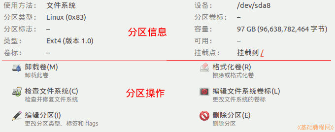

Ubuntu 入门操作指南
作者：TeliuTe 来源：基础教程网
二十五、磁盘实用工具 返回目录 下一课使用磁盘实用工具可以查看磁盘分区情况，以及对分区进行一些操作；
1、磁盘实用工具
1）点击主按钮，在搜索中输入 ci ，打开磁盘实用工具，或者依次点“主按钮、所有程序、过滤结果、附件、磁盘实用工具”；
2）点击左侧列表中的“500 GB 硬盘”，右侧会显示本机硬盘的相关信息；
3）最上边是硬件信息和健康状况，包括硬盘的型号、容量序列号等；
4）点击右边的“SMART 数据”，查看硬盘的温度、使用时间，以及详细的参数，点“关闭”按钮返回；
5）主窗口中间是硬盘的分区情况，一般是主分区和扩展分区，总数不能超过四个，在扩展分区中包含逻辑分区，数量不限；
6）点击一个分区，可以查看它的分区类型、位置、挂载点等信息，下面是一些操作，如修改分区卷标等，注意一些分区操作会删除分区的数据；

本节学习了磁盘实用工具的基础知识，如果你成功地完成了练习，请继续学习下一课内容；
本教程由86团学校TeliuTe制作|著作权所有
基础教程网：http://teliute.org/
美丽的校园……
转载和引用本站内容，请保留作者和本站链接。